MapNG
MapNGTwo of the most asked-for things are in this one: a say in what MapNG builds, and a say in where your car starts. Railways are new too. The fixes come from loading a whole city, Pittsburgh, and going through it bridge by bridge.
🎛️ What to build
Until now MapNG built everything it found, and Advanced mode had a handful of checkboxes. Now there is one card, What to build, with a switch for every kind of thing MapNG makes: 32 features in 9 groups, from lane markings and crosswalks to benches, parked cars and swimming pools.
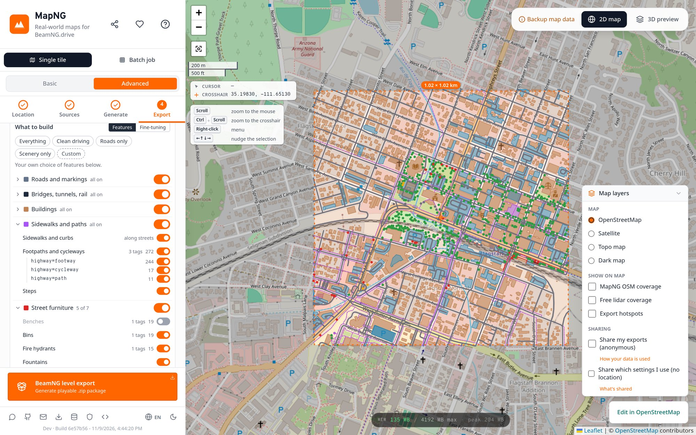
Basic: four presets
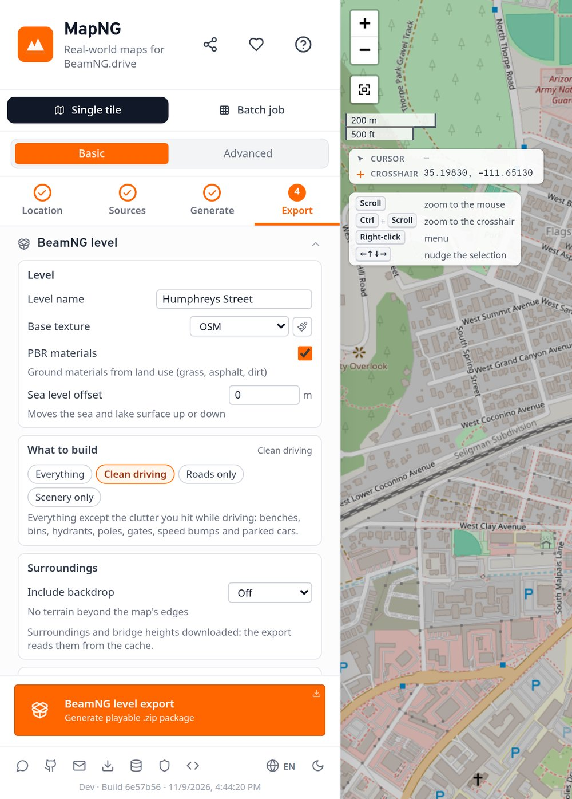
Basic mode stays simple. Pick one of four:
- Everything: all of it. Still the default.
- Clean driving: everything except the clutter you hit while driving: benches, bins, hydrants, poles, gates, speed bumps and parked cars.
- Roads only: roads with their markings, signs, lamps, bridges, tunnels and railways, on bare terrain.
- Scenery only: terrain with trees, grass, rocks and water. No roads or buildings.
Advanced: every switch, and two extra views
- Groups and features. Switch a whole group, or open it and switch single features. The number beside each one is how many MapNG found in your area.
- Show OSM tags. For the detail-minded: open a feature to see the OpenStreetMap tags behind it, and leave out single tags (say, keep walls but drop
barrier=hedge). - Colour the map by group. Paints your area's map data over the 2D map in each group's colour. Switch something off and it fades, so you see what you're removing.
- Presets still work. Start from a preset and change it; the card then shows "Custom".
Fine-tuning has its own tab
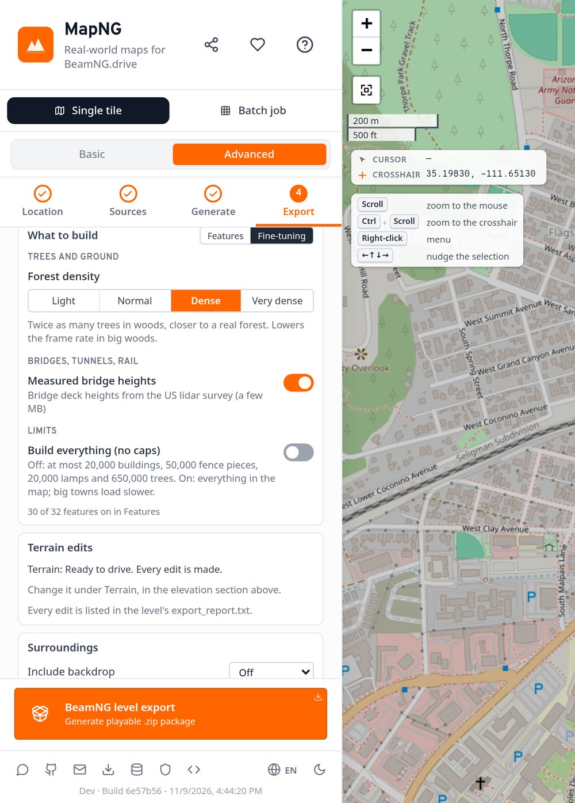
Settings that change how something is built, not whether, moved to a Fine-tuning tab in the same card:
- Forest density: Light, Normal, Dense or Very dense.
- Measured bridge heights: deck heights from the US lidar survey where it covers your bridges.
- Build everything (no caps): lifts the limits that keep big towns playable.
Each one greys out when its feature is switched off.
Behind the scenes: what a switch does
Some things come straight from the map (a bench someone mapped). Others MapNG adds where the map has gaps (benches along a main street, lamps along a lit road). A switch turns off both.
Two details: a street that carries tram tracks keeps its road when you switch railways off, and a crosswalk keeps its paint when you leave out footpaths. Bins, hydrants and benches that MapNG adds stand on the sidewalks, so they go when sidewalks are off; ones mapped in OpenStreetMap stay.
📍 Spawn and quicktravel points
You can now choose where your car starts, and add more places to jump to. In Location → Spawn & quicktravel points, click Place point (or right-click the map) and drop pins. The starred one is the spawn; the rest show in BeamNG's big map under Quicktravel, each with its own photo.
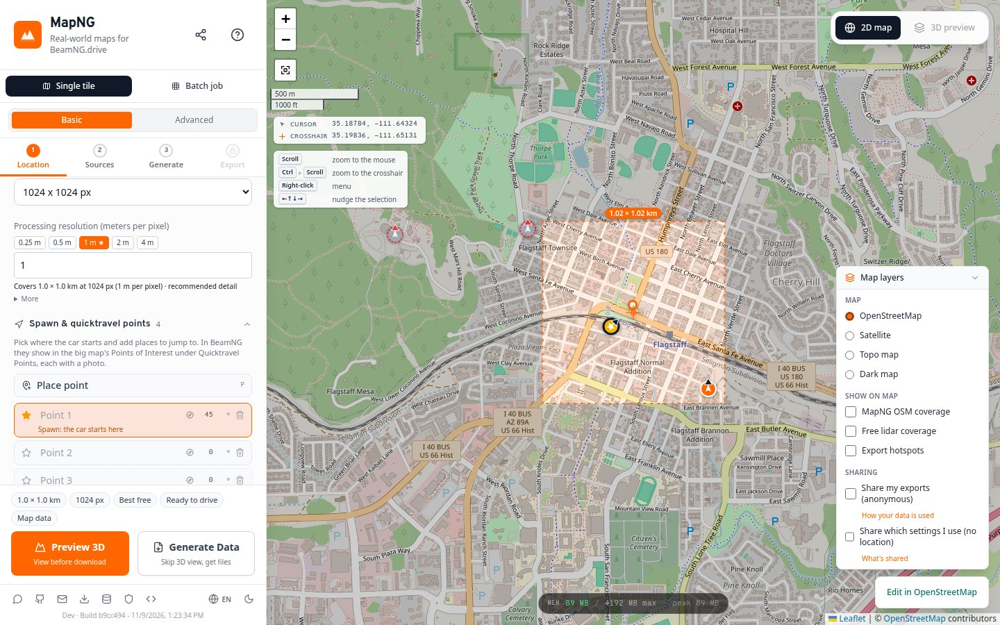
- Each point moves onto the nearest drivable road at export, bridges and tunnels included, and faces along it. Give it a heading if you want a direction.
- Away from roads a point stays where you put it, shifted to the flattest ground nearby so the car doesn't start on a cliff.
- No points? MapNG picks a spawn as before.
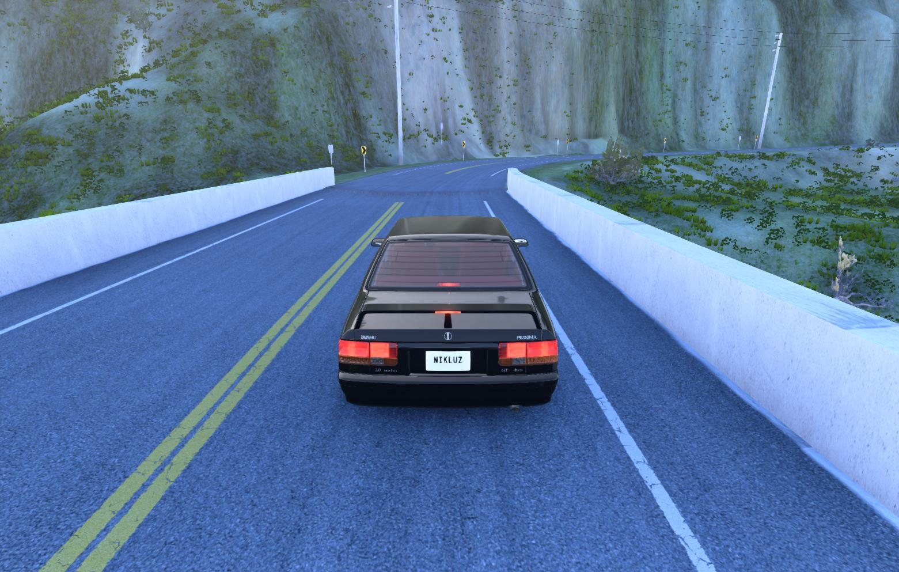
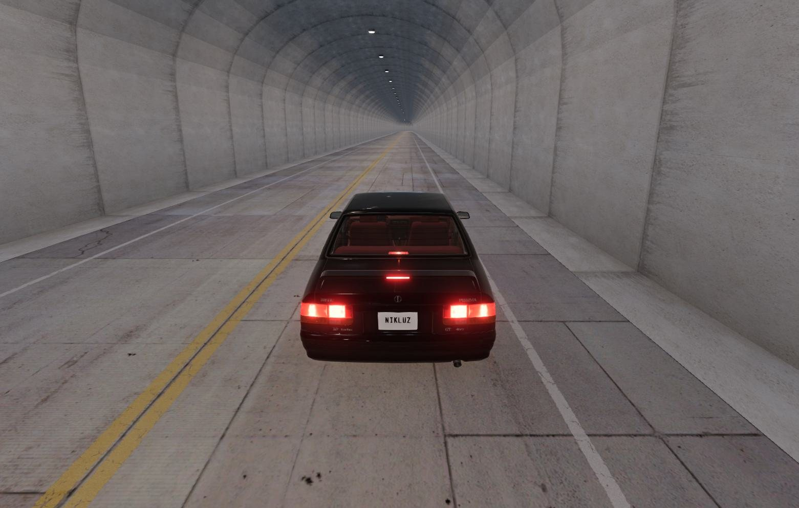
🚆 Railways
Railway lines are now part of the level: main lines, light rail, trams, narrow gauge, monorails and funiculars, with rails, sleepers and a gravel bed. They go through the same solver as roads, so a railway gets its own bridges and tunnels, and where it crosses a street on the level the two meet at the same height.
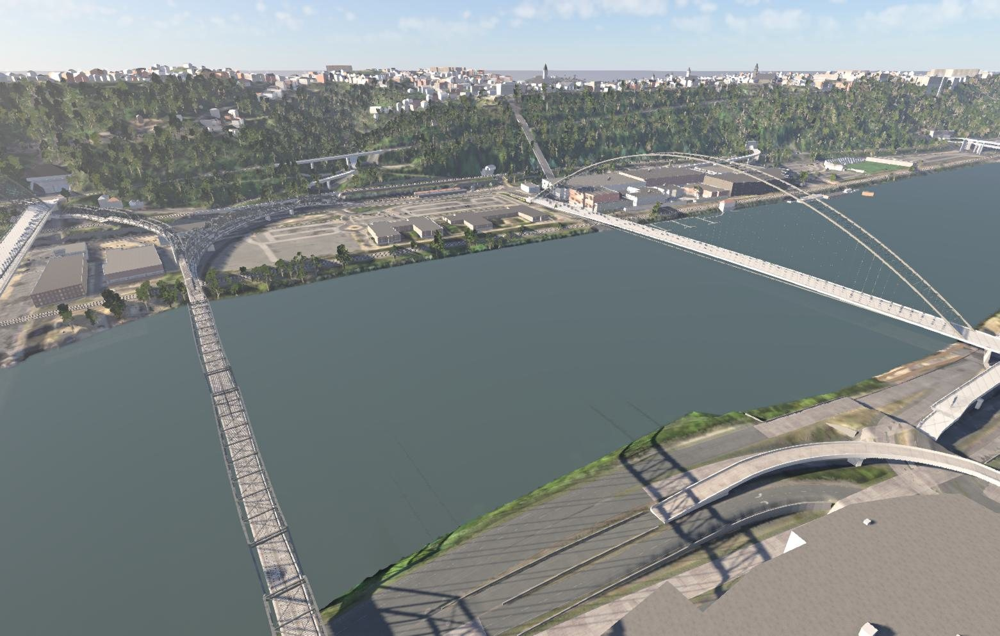
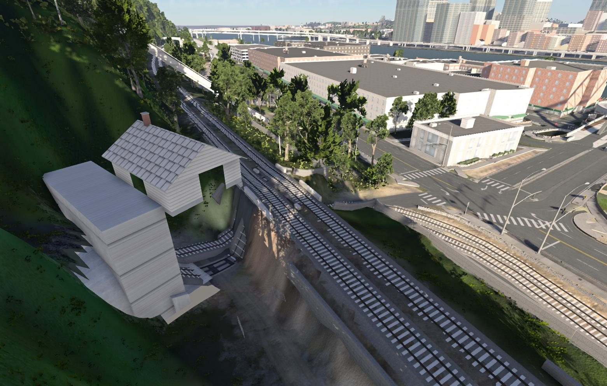
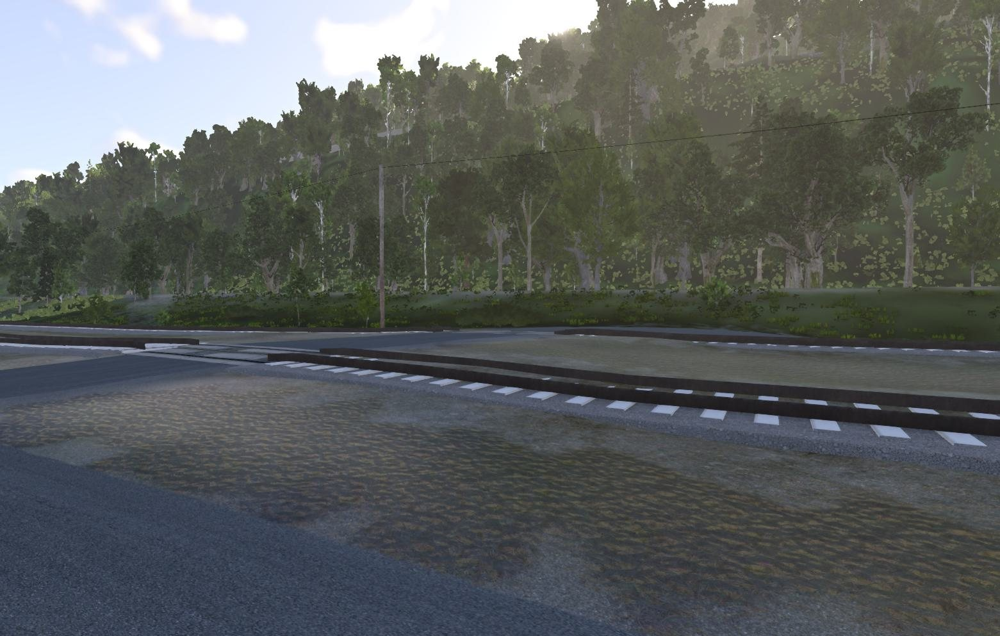
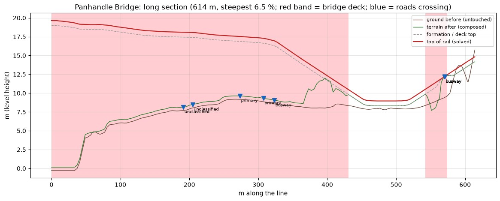
🌉 Bridge, tunnel and river fixes
Pittsburgh has three rivers, hundreds of bridges and tunnels that open straight onto them. Loading it turned up problems you'd meet in any big river city.
Tunnels that open onto bridges
A tunnel whose portal sits at a bridge's end (the Fort Pitt Tunnel is the famous one) used to drape over the hill or stop short of the deck. The tunnel now meets the deck at its height, and a building standing over a portal is lifted clear of the opening instead of blocking it.
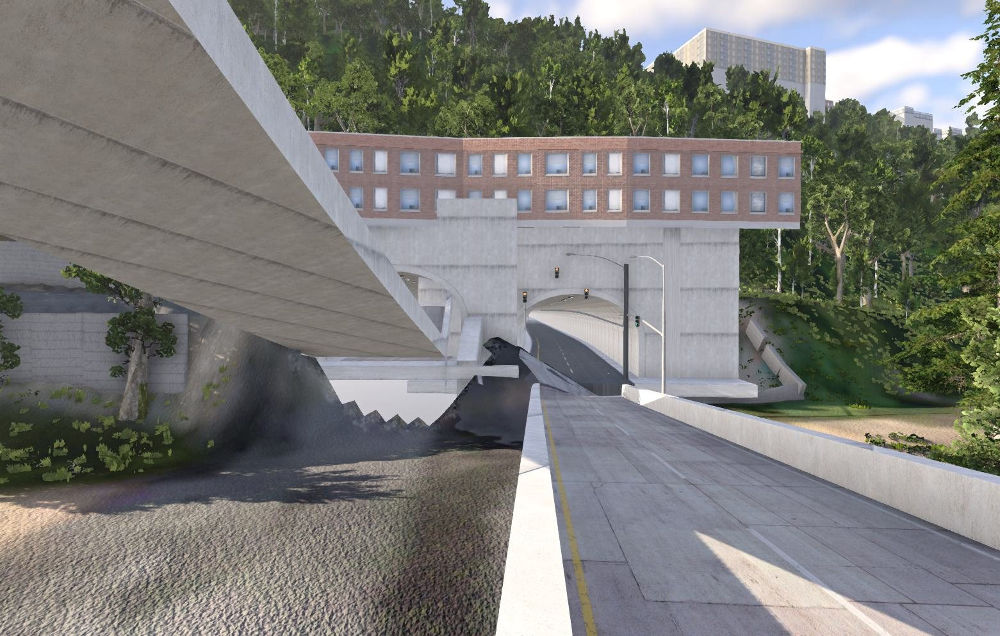
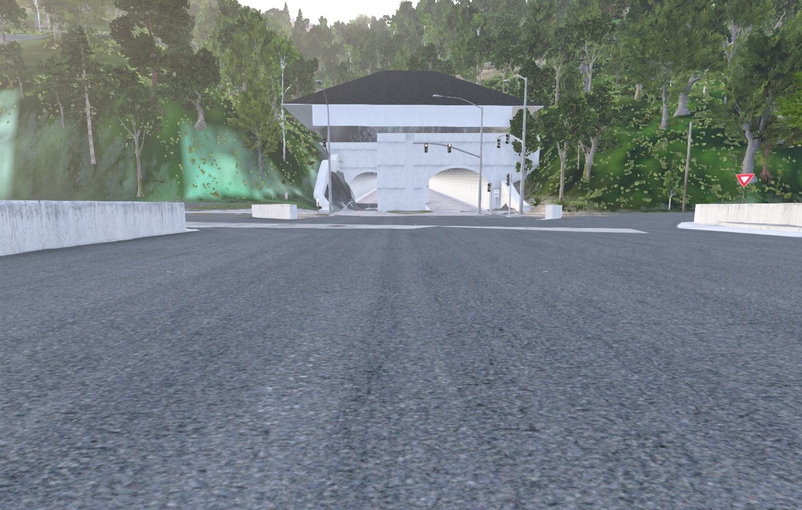
Rivers that look like rivers
With terrain edits off, wide rivers flickered in stripes: the survey's flat water surface sat exactly at the water's height. The bed is now cut just under it. Rivers also stepped where two met; water pieces that touch are now one pool at one level.
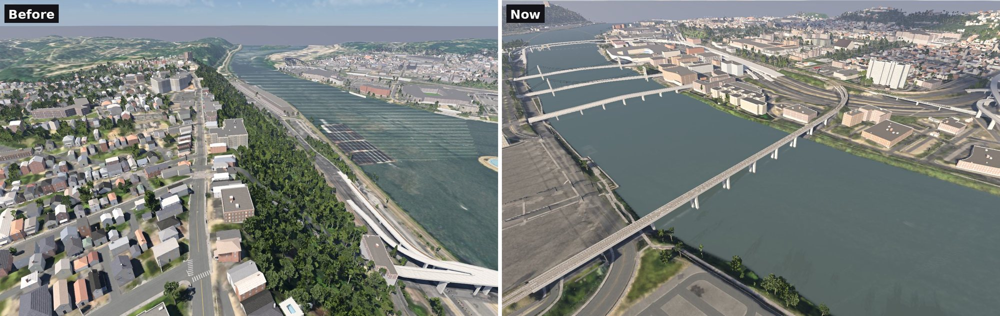
Double-deck bridges, and one arch per crossing
With measured bridge heights on, a double-deck bridge confused the survey: the top deck hides the lower one. MapNG now reads the densest surface as the top deck and looks under it for the hidden one. A bridge drawn as several parallel ways in OpenStreetMap also gets one arch or truss across all of them, not one each crossing through the others.
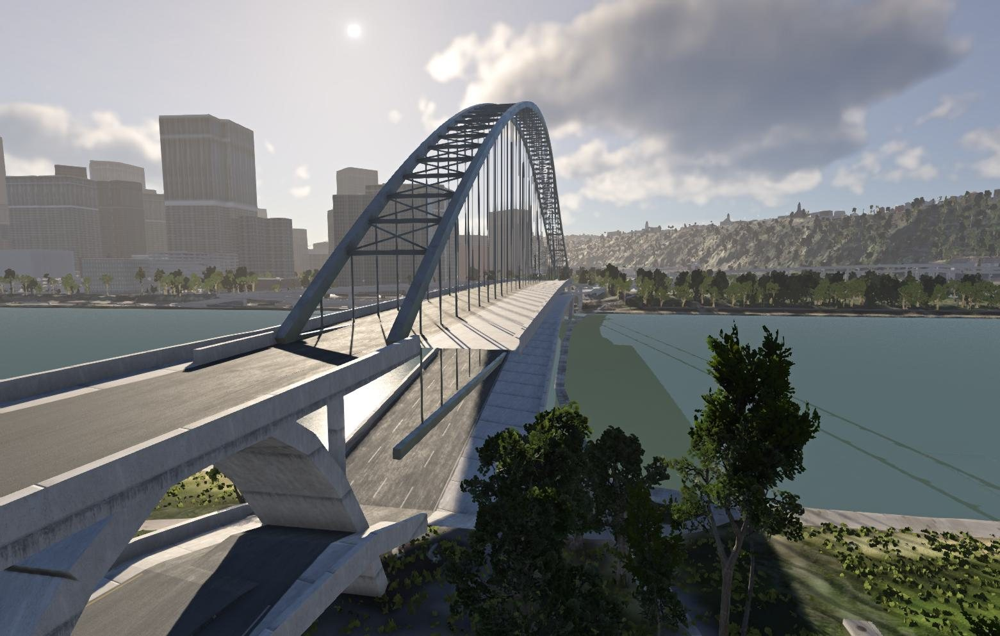
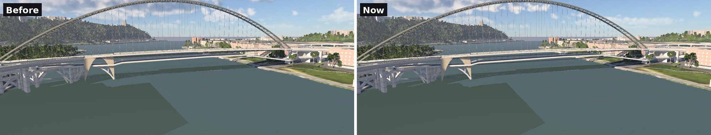
🧹 More fixes and polish
🙏 Thanks
Thanks to everyone testing and sending feedback in the Discord, and to the people who asked for spawn points and for a say in what gets built. Map data © OpenStreetMap contributors. Bridge heights from the USGS 3D Elevation Program. Reference photos while fixing bridges came from Mapillary and Wikimedia Commons.
Heads-up: the Windows build still isn't code-signed. If SmartScreen warns you, choose More info, then Run anyway.
Try "Clean driving" on your home town, drop a few quicktravel points, and tell me what you see. Post in the MapNG Discord or open a GitHub issue. 🧡